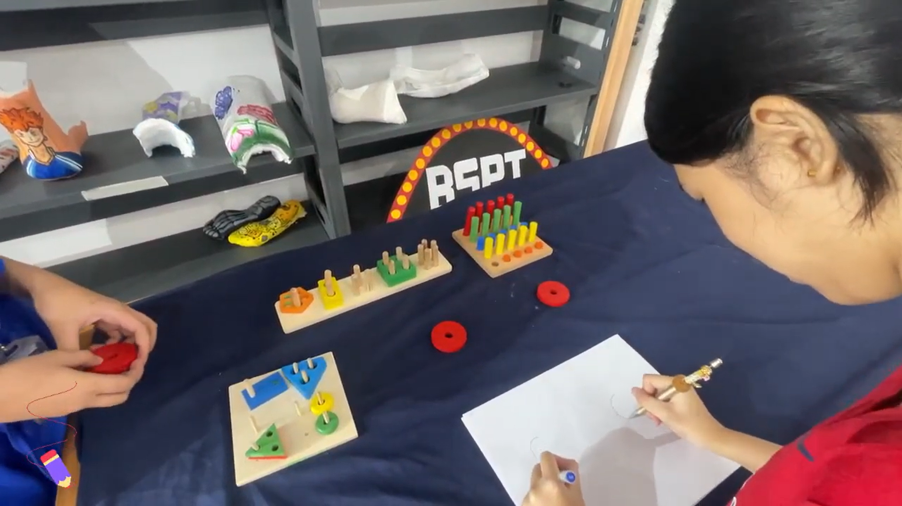

What is Fine Motor Skills Development?
This therapy targets the small muscles of the hands, fingers, and wrists—essential for tasks like writing, eating, buttoning, and using scissors. Through fun, hands-on activities like puzzles, crafts, and sensory bins, we help children build strength, control, and coordination in their fine motor movements.
Key Benefits:
- Improves hand-eye coordination and dexterity
- Strengthens grasp and precision
- Prepares children for school activities (writing, cutting)
- Encourages independence in self-care tasks
- Boosts confidence and creativity through play